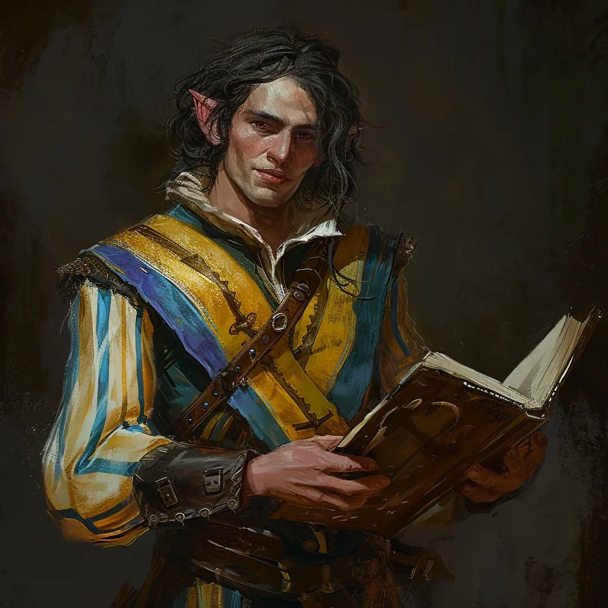

NSCs
Rictavio

Wo getroffen: Vallaki
- Entertained in der Blauwassertaverne.
- Ein Trickbetrüger.
Gerüchte:
- Ein Fremder mit spitzen Ohren hält sich in der Blauwassertaverne auf. Er ist aus einem fernen Land nach Barovia gekommen und auf einem Karnevalswagen in die Stadt geritten.
- Laut dem Tarokka von Madame Eva ist sein Buch für uns nützlich.
KI-Zusammenfassung
Rictavio ist ein NSC. Die Notiz ordnet Rictavio dem Bereich Vallaki / Blauwassertaverne zu.
Beruf / Rolle
Nicht ausdrücklich genannt.
Wohnort / Aufenthalt
Vallaki.
Beziehungen und Verbindungen
Wo getroffen: Vallaki. Entertained in der Blauwassertaverne. Ein Fremder mit spitzen Ohren hält sich in der Blauwassertaverne auf. Er ist aus einem fernen Land nach Barovia gekommen und auf einem Karnevalswagen in die Stadt geritten. Laut dem Tarokka von Madame Eva ist sein Buch für uns nützlich. Säbelzahntiger: Säbelzahntiger von Rictavio. Vallaki: Die Blauwassertaverne bietet Besuchern Essen, Wein und Unterkunft. Ein Fremder mit spitzen Ohren hält sich dort auf. Er ist aus einem fernen Land nach Barovia (Dorf) gekommen und auf einem Karnevalswagen in die Stadt geritten. =Rictavio?=. Rictavios Buch: Laut Madame Eva wird uns das Buch von Rictavio sehr nützlich sein.
Historie / Was wir wissen
Entertained in der Blauwassertaverne. Ein Trickbetrüger. Ein Fremder mit spitzen Ohren hält sich in der Blauwassertaverne auf. Er ist aus einem fernen Land nach Barovia gekommen und auf einem Karnevalswagen in die Stadt geritten. Laut dem Tarokka von Madame Eva ist sein Buch für uns nützlich.